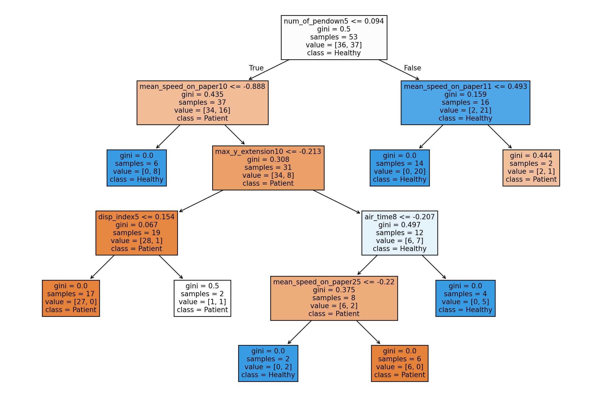
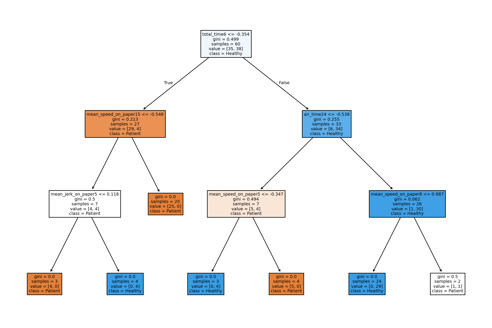
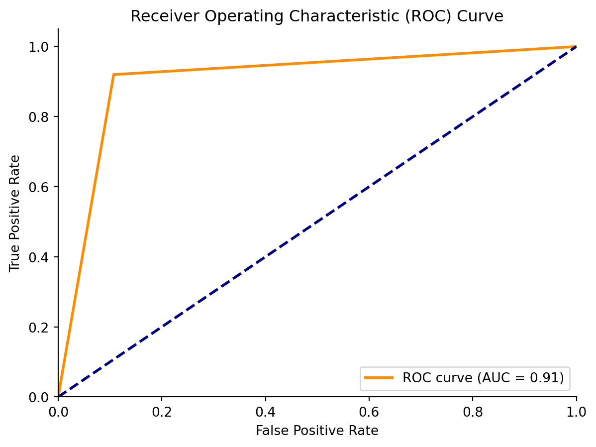
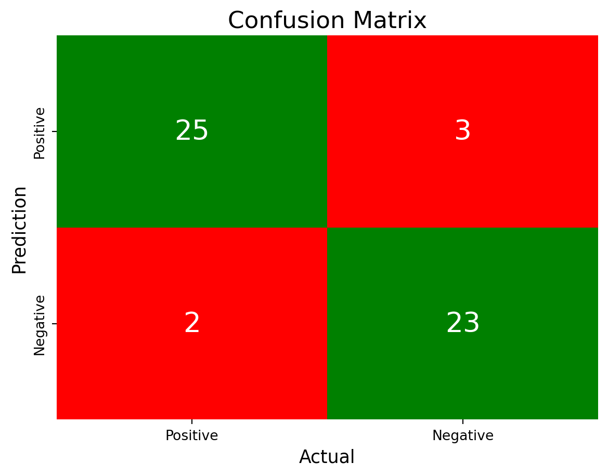

# Libraries
import pandas as pd
import numpy as np
import matplotlib.pyplot as plt
import seaborn as snsAlzheimer’s Detection
Python
Machine Learning
This is a python notebook where I analyze the DAWRIN dataset to detect Alzheimer’s in an individual’s handwriting. To classify, I used random forest in Python.
Background
Alzheimer’s is a type of dementia that affects memory, thinking, and behavior. It is caused by increasing age, and primarily affects people above the age of 65. As a person develops Alzheimer’s, it progressively becomes worse where the individual can lose the ability to carry a conversation or even take care of themselves. After diagnosis, a person can expect to live on average between 4 to 8 years, but on better cases up to 20 years. Luckily there is medication to help slow the worsening of Alzheimer’s, but nothing to completely prevent it from happening.
The data used for the detection of Alzheimer’s through handwriting comes from the DARWIN (Diagnosis AlzheimeR WIth haNdwriting) dataset. This dataset is made up of 174 individual’s handwriting where roughly half are Alzheimer’s patients (P), and healthy people (H). The handwriting was taken through tasks the individuals were asked to do, and then variables like time in air were measured. In doing so, the creators of the DARWIN dataset provided us the materials we need to use machine learning techniques to detect the early stages of Alzheimer’s through handwriting. Some of the tasks recorded were connecting points through lines and copying phrases that were written in front of them, all of which test different parts of the brain.
Using handwriting data, I will use a random forest classifier to predict whether an individual has Alzheimer’s or not. The goal is for future handwriting data to be inserted and accurately predict the correct diagnosis, saving the individual time to get treatment to slow down the process.
Alzheimers detection dataset obtained from https://www.kaggle.com/datasets/taeefnajib/handwriting-data-to-detect-alzheimers-disease.
# Loading data
alz = pd.read_csv("alzheimers.csv")Exploratory Data Analysis
# First 5 rows of data
alz.head(5)| ID | air_time1 | disp_index1 | gmrt_in_air1 | gmrt_on_paper1 | max_x_extension1 | max_y_extension1 | mean_acc_in_air1 | mean_acc_on_paper1 | mean_gmrt1 | ... | mean_jerk_in_air25 | mean_jerk_on_paper25 | mean_speed_in_air25 | mean_speed_on_paper25 | num_of_pendown25 | paper_time25 | pressure_mean25 | pressure_var25 | total_time25 | class | |
|---|---|---|---|---|---|---|---|---|---|---|---|---|---|---|---|---|---|---|---|---|---|
| 0 | id_1 | 5160 | 0.000013 | 120.804174 | 86.853334 | 957 | 6601 | 0.361800 | 0.217459 | 103.828754 | ... | 0.141434 | 0.024471 | 5.596487 | 3.184589 | 71 | 40120 | 1749.278166 | 296102.7676 | 144605 | P |
| 1 | id_2 | 51980 | 0.000016 | 115.318238 | 83.448681 | 1694 | 6998 | 0.272513 | 0.144880 | 99.383459 | ... | 0.049663 | 0.018368 | 1.665973 | 0.950249 | 129 | 126700 | 1504.768272 | 278744.2850 | 298640 | P |
| 2 | id_3 | 2600 | 0.000010 | 229.933997 | 172.761858 | 2333 | 5802 | 0.387020 | 0.181342 | 201.347928 | ... | 0.178194 | 0.017174 | 4.000781 | 2.392521 | 74 | 45480 | 1431.443492 | 144411.7055 | 79025 | P |
| 3 | id_4 | 2130 | 0.000010 | 369.403342 | 183.193104 | 1756 | 8159 | 0.556879 | 0.164502 | 276.298223 | ... | 0.113905 | 0.019860 | 4.206746 | 1.613522 | 123 | 67945 | 1465.843329 | 230184.7154 | 181220 | P |
| 4 | id_5 | 2310 | 0.000007 | 257.997131 | 111.275889 | 987 | 4732 | 0.266077 | 0.145104 | 184.636510 | ... | 0.121782 | 0.020872 | 3.319036 | 1.680629 | 92 | 37285 | 1841.702561 | 158290.0255 | 72575 | P |
5 rows × 452 columns
# Shape of data
alz.shape(174, 452)# Data information
alz.info()<class 'pandas.core.frame.DataFrame'>
RangeIndex: 174 entries, 0 to 173
Columns: 452 entries, ID to class
dtypes: float64(300), int64(150), object(2)
memory usage: 614.6+ KB# Checking for object column names
alz.select_dtypes(include = "object").columns.tolist()['ID', 'class']# Checking for missing values
alz.isna().sum() # No NA valuesID 0
air_time1 0
disp_index1 0
gmrt_in_air1 0
gmrt_on_paper1 0
..
paper_time25 0
pressure_mean25 0
pressure_var25 0
total_time25 0
class 0
Length: 452, dtype: int64Feature Engineering
# Removing ID column
alz = alz.drop("ID", axis = 1)
alz.head(5)| air_time1 | disp_index1 | gmrt_in_air1 | gmrt_on_paper1 | max_x_extension1 | max_y_extension1 | mean_acc_in_air1 | mean_acc_on_paper1 | mean_gmrt1 | mean_jerk_in_air1 | ... | mean_jerk_in_air25 | mean_jerk_on_paper25 | mean_speed_in_air25 | mean_speed_on_paper25 | num_of_pendown25 | paper_time25 | pressure_mean25 | pressure_var25 | total_time25 | class | |
|---|---|---|---|---|---|---|---|---|---|---|---|---|---|---|---|---|---|---|---|---|---|
| 0 | 5160 | 0.000013 | 120.804174 | 86.853334 | 957 | 6601 | 0.361800 | 0.217459 | 103.828754 | 0.051836 | ... | 0.141434 | 0.024471 | 5.596487 | 3.184589 | 71 | 40120 | 1749.278166 | 296102.7676 | 144605 | P |
| 1 | 51980 | 0.000016 | 115.318238 | 83.448681 | 1694 | 6998 | 0.272513 | 0.144880 | 99.383459 | 0.039827 | ... | 0.049663 | 0.018368 | 1.665973 | 0.950249 | 129 | 126700 | 1504.768272 | 278744.2850 | 298640 | P |
| 2 | 2600 | 0.000010 | 229.933997 | 172.761858 | 2333 | 5802 | 0.387020 | 0.181342 | 201.347928 | 0.064220 | ... | 0.178194 | 0.017174 | 4.000781 | 2.392521 | 74 | 45480 | 1431.443492 | 144411.7055 | 79025 | P |
| 3 | 2130 | 0.000010 | 369.403342 | 183.193104 | 1756 | 8159 | 0.556879 | 0.164502 | 276.298223 | 0.090408 | ... | 0.113905 | 0.019860 | 4.206746 | 1.613522 | 123 | 67945 | 1465.843329 | 230184.7154 | 181220 | P |
| 4 | 2310 | 0.000007 | 257.997131 | 111.275889 | 987 | 4732 | 0.266077 | 0.145104 | 184.636510 | 0.037528 | ... | 0.121782 | 0.020872 | 3.319036 | 1.680629 | 92 | 37285 | 1841.702561 | 158290.0255 | 72575 | P |
5 rows × 451 columns
# Converting class to numeric
alz["class"] = alz["class"].replace({'P': 1, 'H': 0})
alz["class"]C:\Users\cor3y\AppData\Local\Temp\ipykernel_6484\2961317950.py:2: FutureWarning: Downcasting behavior in `replace` is deprecated and will be removed in a future version. To retain the old behavior, explicitly call `result.infer_objects(copy=False)`. To opt-in to the future behavior, set `pd.set_option('future.no_silent_downcasting', True)`
alz["class"] = alz["class"].replace({'P': 1, 'H': 0})0 1
1 1
2 1
3 1
4 1
..
169 0
170 0
171 0
172 0
173 0
Name: class, Length: 174, dtype: int64Model Training
from sklearn.model_selection import train_test_split
# Separating features from target
X = alz.drop(columns=["class"])
y = alz["class"]
# Training data with a 70/30 split
X_train, X_test, y_train, y_test = train_test_split(X, y, train_size = 0.7, random_state = 42)# Random Forest
from sklearn.ensemble import RandomForestClassifier
from sklearn.pipeline import Pipeline
from sklearn.preprocessing import StandardScaler
from sklearn.tree import plot_tree
# Creating random forest pipeline with scaled data
pipe = Pipeline([
('scaler', StandardScaler()),
('classifier', RandomForestClassifier(random_state = 42, max_samples = 0.6, min_samples_leaf = 2))
])
# Fitting pipeline
pipe.fit(X_train, y_train)
# Predicting target values
y_pred = pipe.predict(X_test)# Plotting first tree in the random forest
tree_viz = pipe.named_steps['classifier'].estimators_[0]
fig, ax = plt.subplots(figsize = (15, 10))
plot_tree(tree_viz, feature_names = alz.columns.tolist(), class_names = ["Patient", "Healthy"], filled = True)
plt.show()
# Plotting fiftieth tree in the random forest
tree_viz = pipe.named_steps['classifier'].estimators_[49]
fig, ax = plt.subplots(figsize = (15, 10))
plot_tree(tree_viz, feature_names = alz.columns.tolist(), class_names = ["Patient", "Healthy"], filled = True)
plt.show()
Results
from sklearn.metrics import f1_score
# F1 score is high so this random forest model is a good predictor of the target
f1 = f1_score(y_test, y_pred)
print("F1 Score:", f1)F1 Score: 0.9019607843137255from sklearn.metrics import roc_auc_score, roc_curve
# False positive and true positive rates
fpr, tpr, _ = roc_curve(y_test, y_pred)
# AUC
auc = roc_auc_score(y_test, y_pred)
# Plotting ROC curve
fig, ax = plt.subplots()
ax.plot(fpr, tpr, color = 'darkorange', lw = 2, label = 'ROC curve (AUC = {:.2f})'.format(auc))
ax.plot([0, 1], [0, 1], color = 'navy', lw = 2, linestyle = '--')
ax.set_xlim([0.0, 1.0])
ax.set_ylim([0.0, 1.05])
ax.set_xlabel('False Positive Rate')
ax.set_ylabel('True Positive Rate')
ax.set_title('Receiver Operating Characteristic (ROC) Curve')
ax.legend(loc = "lower right")
sns.despine()
plt.show()
from sklearn.metrics import confusion_matrix
# Creating confusion matrix
conf_matrix = confusion_matrix(y_test,y_pred)
# Plotting confusion matrix
fig, ax = plt.subplots()
sns.heatmap(conf_matrix,
annot = True,
fmt = 'g',
xticklabels = ['Positive', 'Negative'],
yticklabels = ['Positive', 'Negative'],
cmap = ["Red", "Green", "Red", "Green"],
cbar = False,
annot_kws = {"size": 20},
ax = ax)
ax.set_title('Confusion Matrix', fontsize = 17)
ax.set_ylabel('Prediction', fontsize = 13)
ax.set_xlabel('Actual', fontsize = 13)
plt.show()
# Creating TP/FP/TN/FN
TP = conf_matrix[1, 1]
FN = conf_matrix[1, 0]
TN = conf_matrix[0, 0]
FP = conf_matrix[0, 1]
# Printing results of predictions
accuracy = (TP + TN) / (TP + TN + FP + FN)
precision = (TP) / (TP + FP)
sensitivity = TP / (TP + FN)
specificity = TN / (TN + FP)
print("Accuracy:", accuracy)
print("Precision:", precision)
print("Sensitivity:", sensitivity)
print("Specificity:", specificity)Accuracy: 0.9056603773584906
Precision: 0.8846153846153846
Sensitivity: 0.92
Specificity: 0.8928571428571429